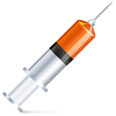

Asguide est destiné aux AS et IDE des urgences de l'URM.
Ce guide a pour but de regrouper les protocoles, procédures, annuaires, travaux des GT et
autres éléments utiles au quotidien.
Tout ce qui est en vert est un lien cliquable.
Pour faire une recherche, même dans un doc pdf: ctrl + F.
Pour modifier la taille du texte, des images, des pdf si besoin: Ctrl + molette souris.
Ce site n'est pas la version officielle;
seule la version informatique officielle du CHU fait foi.
Y'a pas ce que tu cherches au dessus? : sinon
Fiches mémos médicaments d'urgences
(Adrénaline, Atropine, Célocurine, Ephédrine, Etomidate, isuprel, Kétamine, Midazolam, Noradrénaline, Sufentanil)